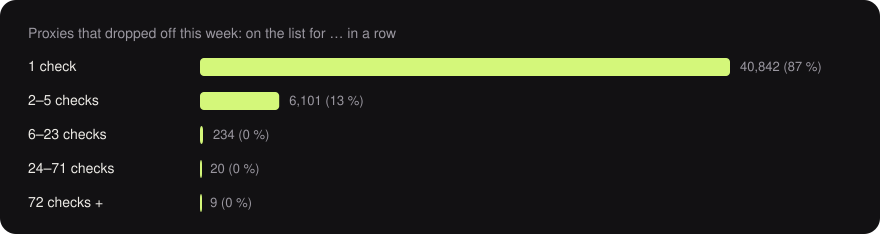
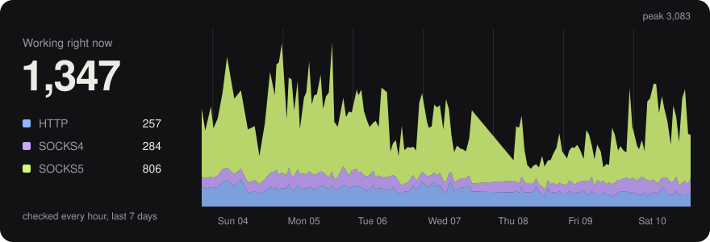

The week in free proxies
Sep 26 – Oct 03, 2026 · 179 checks, about one an hour · updated with every run
Sep 26 – Oct 03, 2026 · 179 checks, about one an hour · updated with every run
49,370 different proxies passed every check at least once. Of the 47,206 that dropped off again, 87 % were gone by the next check, and only 29 (under 0.1 %) made it through 24 checks in a row (about a day) or more. 120 proxies on the list right now have been up for 24 checks in a row or more.
Google let 55 % through – 48 % of datacenter exits, 81 % of the rest.
Reddit let 21 % through – 7 % of datacenter exits, 79 % of the rest.
Amazon let 28 % through – 21 % of datacenter exits, 57 % of the rest.
Instagram let 20 % through – 7 % of datacenter exits, 75 % of the rest.
TikTok let 95 % through – 97 % of datacenter exits, 89 % of the rest.
Between 739 and 4,223 proxies worked at any one time. Right now: 2,164, 65 % of them tunnel HTTPS, 71 % exit from a datacenter.
Downloading 100 KB through them: half manage 75 KiB/s or more, the fastest tenth over 127 KiB/s.
Most of them sit in United States (922), Germany (161), Israel (135), India (109), Australia (98).

